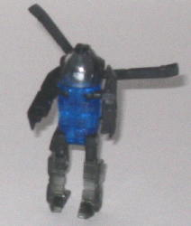
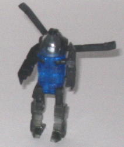

Jolt
Jolt

Difficulty of Transformation : Very Easy
Color Scheme : Black, transparent dark blue, and some silver, clear plastic, and tinted clear plastic
Individual Rating : 6.9
Shadow
Recon Team
Allegiance
: Minicon
Size
: Mini-Con (3-pack)
Homeworld
: Giant Planet
Overall Rating
: 7.3
(NOTE: Because this set is a repaint, this
is not a full-blown review. This mainly covers any changes made to the
set and the color scheme, and merely compares it to the original Recon
Team. For a review on the mold itself, read the review of the original
Recon Team
here
.)
Jolt

Difficulty of Transformation
: Very
Easy
Color Scheme
: Black, transparent
dark blue, and some silver, clear plastic, and tinted clear plastic
Individual Rating
: 6.9
Jolt's new colors, like
the rest of the Shadow Recon Team, are mainly transparent. Out of all the
team members, though, Jolt has the most transparent plastic-- a must. Considering
how thin his propellers and tailfin are, they'd be fragile if they were
made of transparent plastic. The robot arms are also solid black plastic,
as are his upper legs. His lower legs are a fairly dull shade of tinted
clear plastic-- I would have preferred the much nicer color of transparent
dark blue used on his main body. The normal clear plastic is used for his
cockpit, as it has to be in order to show his robot face adequately. Jolt
has very few paint apps, the only two being on part of his helicopter cockpit
bubble and on his robot face. In most cases, this would be a big downside,
but on a Transformer made mostly of transparent plastic, you WANT just
a few paint apps so that all the pretty transparent plastic can show off
its pretty-ness under a strong light.
No mold changes have
been made to Jolt.
Reverb
Difficulty of Transformation
: Very
Easy
Color Scheme
: Clear slightly blue-tinted
plastic, and some black, tinted clear plastic, and dull metallic orange
Individual Rating
: 7.0
Reverb is just pretty
much a plain clear color, which personally I don't think looks very good
on him. On an airplane it would work, perhaps, but not on a SUV/truck hybrid.
All of the colors do go together well, though really the orange windows
are the only colors on Reverb that aren't some shade of clear/white or
black. (Orange is rather odd color to paint windows, too.) Like Jolt, Reverb
has few paint apps, though as I said before that's not much of a downside
in the case of a transparent Transformer. I don't like the black paint
apps on the hands, though-- they make them even more obvious in vehicle
mode now that you can see through the sides of that mode.
No mold changes have
been made to Reverb.
Six-Speed
Difficulty of Transformation
: Very
Easy
Color Scheme
: Transparent dark blue,
and some black, tinted clear plastic, red, light metallic blue, silver,
and clear plastic
Individual Rating
: 7.9
Six-Speed uses the same
transparent dark blue color that Jolt has, and MAN does it look good on
him. The few paint apps that there are only serve to contrast against the
dark blue very well, especially the red visor paint on Six-Speed's face.
He actually looks rather eeevil with his dark color scheme and red visor,
now... The silver paint apps on the arms also serve as very nice contrasting
colors. Not so much for the black paint apps on the knees, but it still
looks nice enough. I really like what the designs did with the racing cockpit/chest,
especially. The upper "bubble" of the cockpit is a regular, clear plastic,
while the front part has a light coating of light metallic blue on it,
which is just light enough to still let light shine through the piece.
This is topped off by having the bottom part of the cockpit made of tinted
plastic-- overall, it looks GREAT, and you could tell a lot of effort went
into figuring out the colors for that part, at the very least.
No mold changes have
been made to Six-Speed.
The Shadow Recon Team are the first transparent Minicon, and with the exception of the bland clear plastic used for Reverb, it's a very nice twist on a repaint. Jolt and Six-Speed look great in transparent dark blue, Six-Speed especially. Recommended over the original Recon Team.
Review by Beastbot